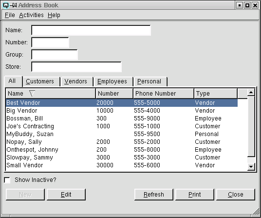
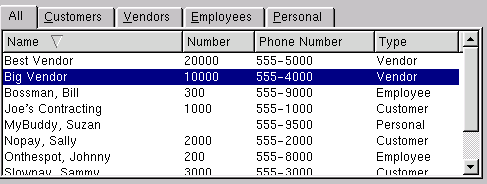
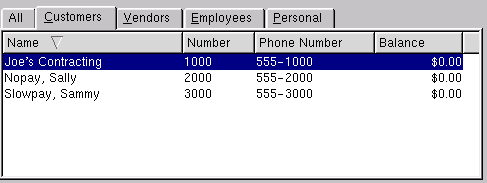
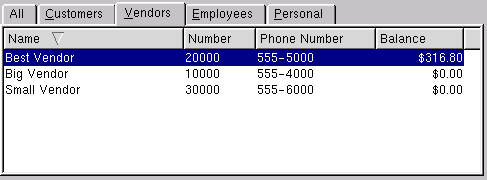
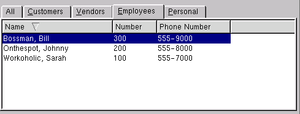
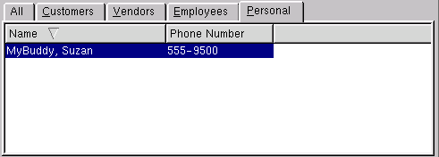

Address Book

The address book has five display folders. The default is "All". Click
on "Customers" to add, delete, view and edit customer cards. Click on
"Vendors" to add, delete, view and edit vendor cards. Click on "Employees"
to add, delete, view and edit employee cards. Click on "Personal" to
add, delete, view and edit personal cards.
Name - Search
Utilize this section to search for one or more cards by
name. Enter any series of letters in consecutive order and press the
"Refresh" button. For example, you may select Sally Nopay out of a
group of names by entering "pay" and clicking on the "Refresh"
button. Only names with "pay" in them will be displayed. Letters may
be entered in either upper or lower case.
Number - Search
Utilize this section to search for one card by
number. Enter an exact number to find. Click on the "Refresh" button
to display the card.
Group - Search
Utilize this section to search for one or more cards by
group. Enter any series of letters in consecutive order and press the
"Refresh" button. For example, you may select all cards linked to the group called "Gold" by entering "gold" and clicking on the "Refresh"
button. Letters may be entered in either upper or lower case.
Customers and vendors can be linked to groups for pricing and costing purposes. Prices and costs can be created that are only valid for specific groups.
Store - Search
Utilize this section to search for one or more cards by
store. Select the store to search.
All

The all folder can be used to display all card types. Customers,
vendors, employees and personal acquaintances.
-
- Name - Displays the name on the card.
- Number - Displays the number of the card. The number for
each card is unique.
- Phone Number- Displays the phone number on the card.
- Type - Displays the type of card. There are four types;
customer, vendor, employee or personal.
- Inactive? - Displays if the card is inactive. Note that
inactive cards will only show on this list if the "Show Active" toggle
is turned on.
Customers

-
- Name - Displays the name on the card.
- Number - Displays the number of the card. The number for
each card is unique.
- Phone Number- Displays the phone number on the card.
- Balance - Displays the customer's current balance.
- Inactive? - Displays if the card is inactive. Note that
inactive cards will only show on this list if the "Show Active" toggle
is turned on.
Vendors

-
- Name - Displays the name on the card.
- Number - Displays the number of the card. The number for
each card is unique.
- Phone Number- Displays the phone number on the card.
- Balance - Displays the vendor's current balance.
- Inactive? - Displays if the card is inactive. Note that
inactive cards will only show on this list if the "Show Active" toggle
is turned on.
Employees

-
- Name - Displays the name on the card.
- Number - Displays the number of the card. The number for
each card is unique.
- Phone Number- Displays the phone number on the card.
- Inactive? - Displays if the card is inactive. Note that
inactive cards will only show on this list if the "Show Active" toggle
is turned on.
Personal

-
- Name - Displays the name on the card.
- Phone Number- Displays the phone number on the card.
- Inactive? - Displays if the card is inactive. Note that
inactive cards will only show on this list if the "Show Active" toggle
is turned on.
Show Inactive?
Toggle on or off. Toggle on to display both active and non-active
cards. Toggle off to display only active cards.
New
Select this function to create a card.
Edit
Select this function to edit the high-lighted card.
Refresh
Clicking on refresh will refresh the data on the screen.
Print
Select this function to print the contents of the list to the
printer.